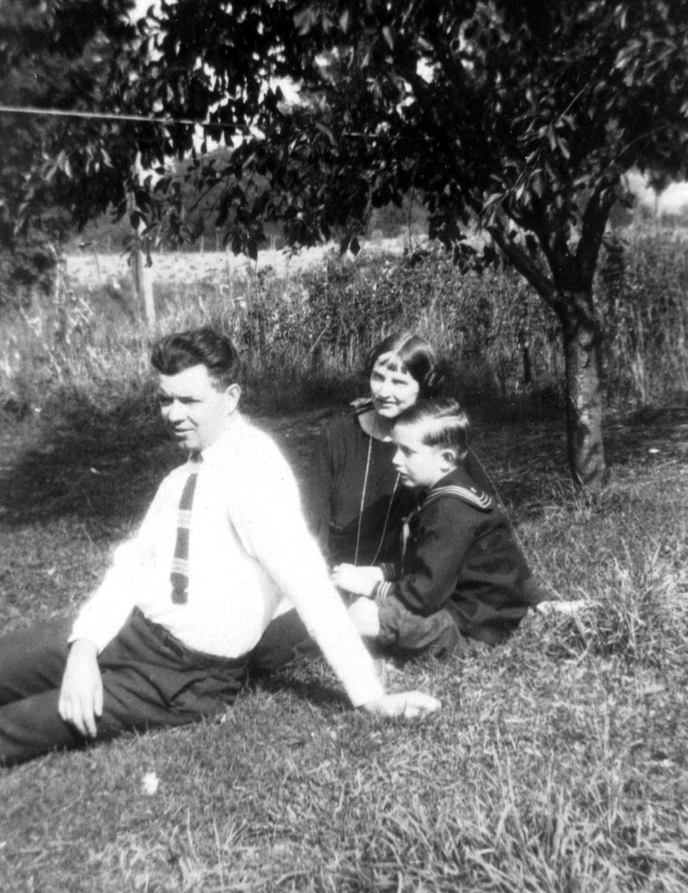

CAMPBELL COUSINS CORRESPONDENCE
North
Brookfield, N. Y.,
October 7, 1923.
Dear Cousins:-
A short time ago, I received from
Cousin Will Selph the first
quarterly report of the Campbell Cousins Correspondence, also a
letter saying they were asking the second Cousins to join in the
Correspondence. We have read every letter and cannot tell you how
we enjoyed them all.
It has been five years last August
since we left Nelson and I have never been back to the Campbell
Re‑union, so we have not seen many of our Cousins for some
time.
We like this part of New York State
very much. We are about six miles from Colgate University, fifteen
miles from Hamilton College, and about one hour's drive from Utica,
N. Y. Taking everything into consideration, we think it is a nice
country to live in and would love to have the Cousins all come and
see us.
Joseph will be seven years old this month. He is in the second
grade at school.
Our pictures were very much of
a failure and came back from being printed too late to get more
taken and sent to our Secretary in time for this report.
We are all well and are looking
forward to the second quarterly report of the Campbell Cousins.
Sincerely,
COUSIN
ELIZABETH H. WALKER.

* * * * *
Photo of
L. Roy
Walker
Joseph
Hoyt Walker
Elizabeth
H. Walker
* * * * *
- Report No. 2 - Page 31
-
(Phoebe Campbell
Family)